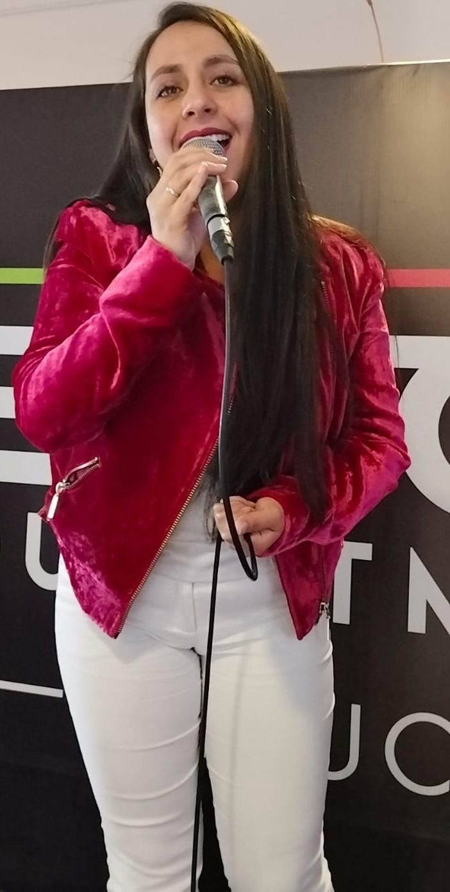
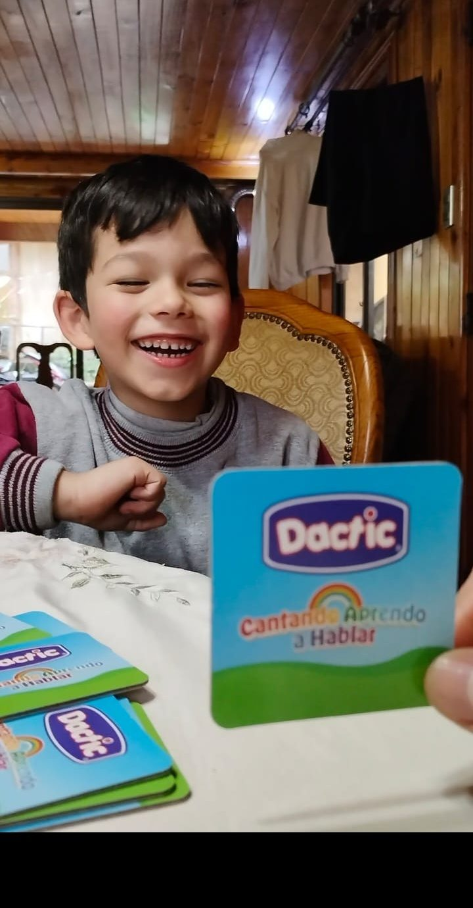

Terapia infantil
Evaluación y tratamiento del lenguaje y el habla en niños y niñas, con foco en Autismo y Apraxia del Habla, usando el juego y el canto como herramienta terapéutica.
Fonoaudióloga · Diplomado en Vocología
Terapia fonoaudiológica para niños, niñas, jóvenes y adultos, con formación especializada en Autismo y Apraxia del Habla — más clases de canto y voz en vivo para tus eventos. Rigor profesional, con toda la calidez de quien ama trabajar con la infancia.
Sobre mí
Soy Daniela Pérez Díaz, Fonoaudióloga con Diplomado en Vocología y formación en Autismo y Apraxia del Habla. Trabajo con niños, niñas, jóvenes y adultos, adaptando cada terapia a la persona que tengo enfrente — porque no existen dos voces iguales.
Quienes me conocen dicen que mi consulta no se siente como una consulta: canto, juego y me río con cada niño y niña que llega, porque sé que así se aprende mejor a hablar. Esa misma pasión por la voz me llevó a formarme también como cantante, entendiendo el instrumento vocal desde todos sus ángulos.
Servicios
Cuatro formas de trabajar la voz y la comunicación, según lo que tú o tu hijo o hija necesiten.
Evaluación y tratamiento del lenguaje y el habla en niños y niñas, con foco en Autismo y Apraxia del Habla, usando el juego y el canto como herramienta terapéutica.
Atención de voz, habla y comunicación para adolescentes y adultos, con seguimiento profesional y personalizado en cada etapa de la vida.
Técnica vocal, respiración y cuidado de la voz respaldados por el Diplomado en Vocología, para todas las edades y niveles.
Música en vivo para matrimonios, cócteles y cenas, restaurantes, intermedios musicales y eventos de empresa, con repertorio a medida.

Voz en vivo
Además de la terapia, Daniela pone su voz al servicio de tu evento: ambientación musical para cócteles y cenas, ceremonias de matrimonio, celebraciones de empresa y restaurantes.
Cotizar mi evento
Aprender jugando
La mejor terapia es la que no se siente como terapia. En cada sesión con niños y niñas uso canciones, tarjetas y juegos para que aprender a hablar sea, sobre todo, un buen rato — y los resultados llegan mientras nos reímos juntos.
Jugar ahora en WordwallRedes sociales
Terapias, canto y el día a día de trabajar con voces de todas las edades — todo en @danifonovoz.
Contacto
Cuéntame qué necesitas — una evaluación, clases de canto o música para tu evento — y te respondo directamente por WhatsApp.
Respondo personalmente cada mensaje. Cuéntame la edad de tu hijo o hija, o el tipo de evento que estás organizando, y coordinamos los detalles.